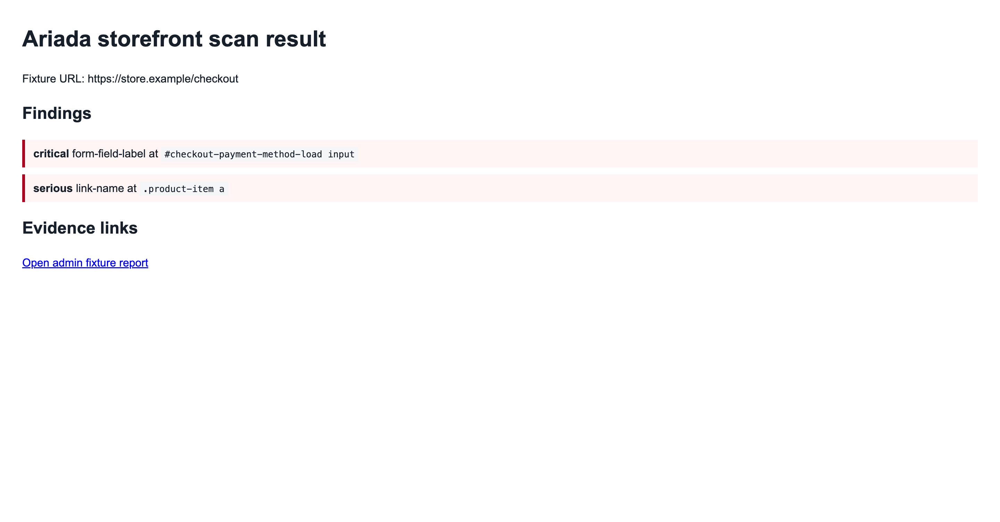

Status: HOST_BLOCKED for PHP lint and real Magento install; local module fixture, XML validation, Node evidence validation, and screenshot checks are implemented evidence.
Magento Open Source and Adobe Commerce are PHP e-commerce platforms for catalogs, storefront pages, carts, checkout, and merchant admin operations.
Magento has platform routing, admin ACL, layout XML, and checkout surfaces. The Ariada module wraps the shared scanner for merchant-facing accessibility evidence instead of reimplementing scan logic.
| Merchant owner | Buys recurring EAA/WCAG evidence for revenue pages. |
|---|---|
| Agency or integrator | Bundles scan evidence into launch and maintenance retainers. |
| Compliance lead | Needs repeatable release artifacts before audit or procurement review. |
| Implemented | Module registration, module XML, routes, ACL, menu, admin controller/view fixture, storefront result fixture, CLI command builder, hosted payload builder, local fixture flow, XML validation, Node evidence validation. |
|---|---|
| Not implemented | Real Magento database install, generated code, admin login, bin/magento setup:upgrade, and Adobe Marketplace QA. |
| HOST_BLOCKED | PHP lint is HOST_BLOCKED because php is unavailable. Real Magento install is HOST_BLOCKED because Magento, database, search service, and admin credentials are unavailable. |
| Accessibility widgets | Fast storefront overlays but weak developer evidence. |
|---|---|
| Manual audits | Strong human review but not continuous release evidence. |
| Generic crawlers | Can scan public URLs but do not package Magento admin routing and checkout defaults. |
First domain: accessibility for labels, names, contrast, keyboard reachability, headings, landmarks, target size, form errors, and checkout blockers.
| Local CLI | ariada scan https://store.example/checkout --domains accessibility --format json --output-dir var/ariada-scan |
|---|---|
| Hosted API | {
"url": "https://store.example/checkout",
"domains": [
"accessibility"
],
"severityThreshold": "serious"
} |
| Magento surfaces | Admin route ariada/scan/index; storefront fixture route ariada-accessibility/scan/result. |
| Module fixture | Required files exist and are listed in admin fixture report. |
|---|---|
| Local validation | xmllint --noout passed for XML files; node tests/fixture-flow.mjs and node tests/validate-evidence.mjs passed. |
| Host blockers | PHP lint and real Magento install remain HOST_BLOCKED for missing PHP/Magento/db/admin credentials. |

| PHP lint | HOST_BLOCKED because php is not installed. |
|---|---|
| Magento install | HOST_BLOCKED because Magento, database, search service, generated code, admin credentials, and setup/upgrade runtime are unavailable. |
| Marketplace | FOUNDER_STEP for Adobe developer account and marketplace QA. |
Development install path is app/code/Ariada/Commerce, followed by bin/magento module:enable Ariada_Commerce, bin/magento setup:upgrade, and cache clean on a Magento host.
The module can stay free while paid value sits in hosted scans, evidence retention, dashboards, signed exports, and managed release gates.